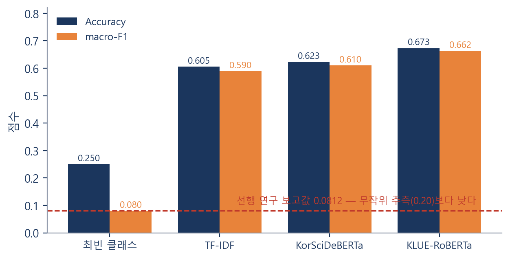
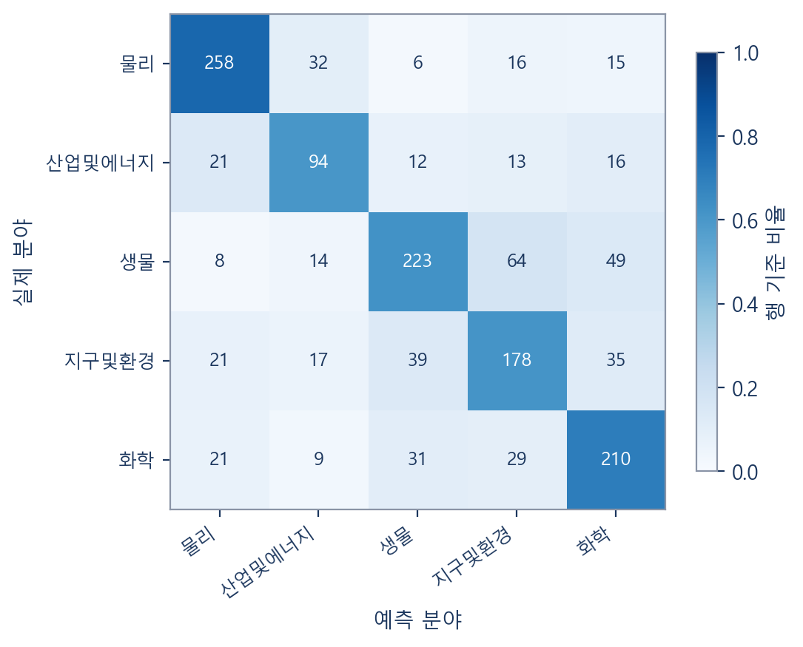
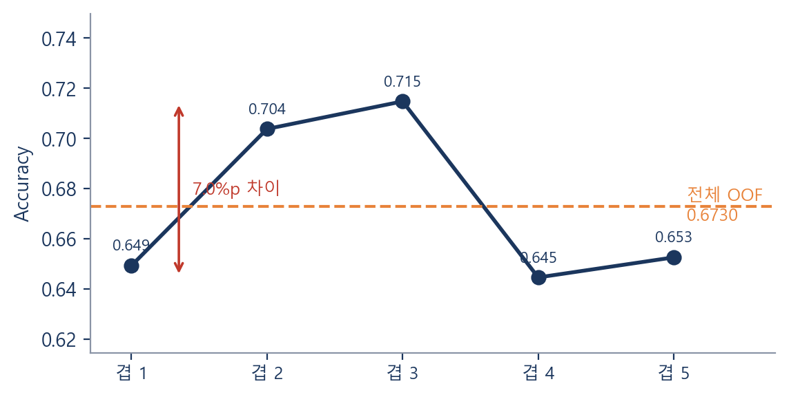

평가 설계 오류의 교정과 사전학습 언어모델 비교
연구자 2220 최은수B · 2105 김경민 지도교사 한정신
선행 연구가 보고한 정확도를 기준선과 나란히 놓아 보았다
선행 연구의 평가 코드를 다시 읽어 세 가지를 확인했다
학습 루프가 없었다
AutoModelForSequenceClassification은 분류 헤드를 무작위로 새로 만든다.
옵티마이저와 역전파가 없어 그 난수가 끝까지 유지됐다.
레이블 수가 맞지 않았다
num_labels=7로 설정했으나 정답은 클러스터 번호 0~2뿐이었다.
존재할 수 없는 4~6번이 예측 후보에 있었다.
평가가 순환 구조였다
정답 레이블을 같은 임베딩의 클러스터링으로 만들었다. 논문 주제가 아니라 K-Means의 결정을 얼마나 모방하는지를 재고 있었다.
정확도를 높이기보다 먼저 믿을 수 있게 만들었다
외부 정답 레이블
5개 분야
전국과학전람회가 부여한 공식 분야를 정답으로 삼았다. 우리 모델과 완전히 독립적이다.
데이터 누수 차단
773 / 876
지도논문을 학생논문에 병합(88%)하고, 유사 중복 문서는 같은 겹에 묶었다.
교차검증 OOF
1,431편
전체 문서가 각각 한 번씩, 자신을 학습하지 않은 모델에게 평가받는다.
단일 홀드아웃(215편)보다 평가 표본이 6.6배 커져 수치가 훨씬 덜 흔들린다
전국과학전람회 2020–2024 수상 논문 (제목 + 요약문)
| 처리 단계 | 편수 |
|---|---|
| 원본 수집 | 2,349 |
| 결측·완전중복 제거 | 2,337 |
| 지도논문 773편 병합 | 1,564 |
| 크롤링 실패 42편 제거 | 1,522 |
| '기타' 분야 91편 제외 | 1,431 |
분야별 편수
요약문은 평균 254자로 짧다. 선행 연구가 쓴 512토큰은 과했고 384토큰으로 충분했다.
1,431편 out-of-fold, 시드 42

TF-IDF 0.6054 → KLUE-RoBERTa 0.6730 (macro-F1 0.5896 → 0.6625)
선행 연구가 KorSciDeBERTa를 선택한 근거와 반대되는 결과
| 모델 | Accuracy | macro-F1 |
|---|---|---|
| KLUE-RoBERTa (범용, 110M) | 0.6730 | 0.6625 |
| KorSciDeBERTa (특화, 180M) | 0.6233 | 0.6104 |
| 차이 | +0.0497 | +0.0521 |
짝지은 부트스트랩 95% CI [+0.028, +0.076], p < 0.001
→ 표본 크기에 의한 우연으로 보기 어렵다
가능한 해석
결론은 “부적합하다”가 아니라 “같은 조건에서 도메인 이점이 전이되지 않았다”로 한정한다
KLUE-RoBERTa 혼동행렬 (행=실제, 열=예측)

확신도가 높았던 오답
「고수 추출물을 활용한 항균 마스크」
정답 화학 → 예측 생물 (확신도 0.94)
「커피박을 이용한 토양 미세플라스틱 제거」
정답 생물 → 예측 지구및환경 (확신도 0.93)
0.8679
Top-2 정확도 — 상위 두 분야 안에 정답이 있는 비율.
정확도 100%는 도달 가능한 목표가 아니다.
같은 모델·같은 데이터에서 겹만 바꿨을 때의 정확도

겹 3만 떼어 보고하면 0.715, 겹 4만 보면 0.645. 교차검증과 신뢰구간을 함께 써야 한다.
측정을 먼저 의심한다
지표가 상식을 벗어나면 개선보다 검증이 먼저다. 알고리즘을 세 번 바꿔도 수치는 움직이지 않았다.
기준선 없이는 평가가 없다
TF-IDF 0.605를 먼저 확보한 뒤에야 0.673이 의미 있는 향상인지 판단할 수 있었다.
가진 정답을 버리지 않는다
분야 라벨이 이미 있었는데 “의미 없을 것”이라 판단한 것이 어긋난 분기점이었다.
직접 써 보기
nk562220.github.io/re-analysis-of-korscideberta
초록을 붙여넣으면 분야를 예측하는 웹 분류기
(브라우저에서 직접 추론 — 서버 없음)